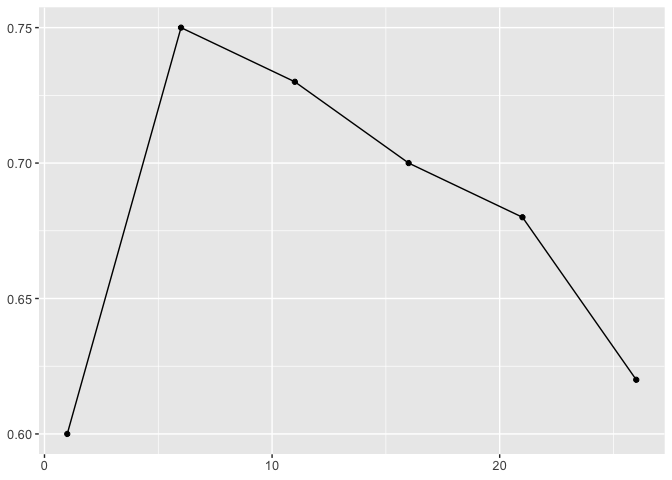

The goal of rWinePredictor is to provide functions that may be useful when building classifiers. This package was originally inteded for a wine quality classifier based on physical and chemical properties of the wine but functions in this package can be used in other models.
Functions included
generate_summary_stats: Groups input data by factors of target variable and summarizes counts and means for each class across all parameters in the dataset.create_lineplot: Creates a line plot with data points (scatter plot + line plot) and has the option to include the axis titles and plot title.calculate_model_metrics: Calculates a specified model metric (e.g., accuracy, precision, recall) for a given set of predictions and ground truth values.
Place within the R package ecosystem
rWinePredictor is similar to other R packages but does away with long codeblocks and streamlines the process of building classification models. Firstly, generate_summary_stats uses dplyr’s group_by and summarize but it calculates the mean of all columns in the set for all facts in the target column. This is an elegant and easy-to-use solution for EDA. Additionally, create_lineplot is built using ggplot2 but also creates line plots in a simple manner, where a user has to just specify the dataset, x and y columns, and whether to include a title or not. Lastly, calculate_model_metrics allows users to quickly assess their models; it is built using parsnip but allows for an easy solution when users want to benchmark their models quickly.
Installation
You can install the development version of rWinePredictor from GitHub with:
# install.packages("devtools")
devtools::install_github("DSCI-310-2024/rWinePredictor")Example
A dataset may look like this:
df <- data.frame(
quality = c('good', 'bad', 'good'),
alcohol = c(10, 12, 14),
sugars = c(1.5, 20, 7.7),
pH = c(3.3, 4, 2.9),
stringsAsFactors = TRUE
)We can import this package and begin with some EDA by generating summary data grouped by the classes of the target variable in our dataset using rWinePredictor::generate_summary_stats()
library(rWinePredictor)
generate_summary_stats(df, quality)
#> # A tibble: 2 × 6
#> quality count percentage alcohol_avg sugars_avg pH_avg
#> <fct> <int> <dbl> <dbl> <dbl> <dbl>
#> 1 bad 1 33.3 12 20 4
#> 2 good 2 66.7 12 4.6 3.1When building the model, you will likely tune the hyperparamters. This package has a function for generating scatter plots with connecting lines to find the ideal hyperparamter value. For example you might have a set of accuracies for given k values in a K-NN model. Using rWinePredictor::create_lineplot(), you can plot these values.
acc_k <- data.frame(
acc = c(0.6, 0.75, 0.73, 0.7, 0.68, 0.62),
k_val = c(1, 6, 11, 16, 21, 26))
plt <- create_lineplot(acc_k, k_val, acc)
plot(plt)
Lastly, different model metrics can easily be calculated using rWinePredictor::calculate_model_metric().
library(yardstick)
model_df = yardstick::two_class_example
accuracy <- calculate_model_metric(model_df, truth_col='truth', predictions_col='predicted', metric="accuracy")
accuracy
#> [1] 0.838